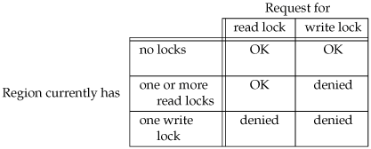

14.3. Record LockingWhat happens when two people edit the same file at the same time? In most UNIX systems, the final state of the file corresponds to the last process that wrote the file. In some applications, however, such as a database system, a process needs to be certain that it alone is writing to a file. To provide this capability for processes that need it, commercial UNIX systems provide record locking. (In Chapter 20, we develop a database library that uses record locking.) Record locking is the term normally used to describe the ability of a process to prevent other processes from modifying a region of a file while the first process is reading or modifying that portion of the file. Under the UNIX System, the adjective "record" is a misnomer, since the UNIX kernel does not have a notion of records in a file. A better term is byte-range locking, since it is a range of a file (possibly the entire file) that is locked. HistoryOne of the criticisms of early UNIX systems was that they couldn't be used to run database systems, because there was no support for locking portions of files. As UNIX systems found their way into business computing environments, various groups added support record locking (differently, of course). Early Berkeley releases supported only the flock function. This function locks only entire files, not regions of a file. Record locking was added to System V Release 3 through the fcntl function. The lockf function was built on top of this, providing a simplified interface. These functions allowed callers to lock arbitrary byte ranges in a file, from the entire file down to a single byte within the file. POSIX.1 chose to standardize on the fcntl approach. Figure 14.2 shows the forms of record locking provided by various systems. Note that the Single UNIX Specification includes lockf in the XSI extension.
We describe the difference between advisory locking and mandatory locking later in this section. In this text, we describe only the POSIX.1 fcntl locking.
fcntl Record LockingLet's repeat the prototype for the fcntl function from Section 3.14.
For record locking, cmd is F_GETLK, F_SETLK, or F_SETLKW. The third argument (which we'll call flockptr) is a pointer to an flock structure.
struct flock {
short l_type; /* F_RDLCK, F_WRLCK, or F_UNLCK */
off_t l_start; /* offset in bytes, relative to l_whence */
short l_whence; /* SEEK_SET, SEEK_CUR, or SEEK_END */
off_t l_len; /* length, in bytes; 0 means lock to EOF */
pid_t l_pid; /* returned with F_GETLK */
};
This structure describes
There are numerous rules about the specification of the region to be locked or unlocked.
We mentioned two types of locks: a shared read lock (l_type of F_RDLCK) and an exclusive write lock (F_WRLCK). The basic rule is that any number of processes can have a shared read lock on a given byte, but only one process can have an exclusive write lock on a given byte. Furthermore, if there are one or more read locks on a byte, there can't be any write locks on that byte; if there is an exclusive write lock on a byte, there can't be any read locks on that byte. We show this compatibility rule in Figure 14.3. Figure 14.3. Compatibility between different lock types The compatibility rule applies to lock requests made from different processes, not to multiple lock requests made by a single process. If a process has an existing lock on a range of a file, a subsequent attempt to place a lock on the same range by the same process will replace the existing lock with the new one. Thus, if a process has a write lock on bytes 1632 of a file and then tries to place a read lock on bytes 1632, the request will succeed (assuming that we're not racing with any other processes trying to lock the same portion of the file), and the write lock will be replaced by a read lock. To obtain a read lock, the descriptor must be open for reading; to obtain a write lock, the descriptor must be open for writing. We can now describe the three commands for the fcntl function.
Be aware that testing for a lock with F_GETLK and then trying to obtain that lock with F_SETLK or F_SETLKW is not an atomic operation. We have no guarantee that, between the two fcntl calls, some other process won't come in and obtain the same lock. If we don't want to block while waiting for a lock to become available to us, we must handle the possible error returns from F_SETLK.
When setting or releasing a lock on a file, the system combines or splits adjacent areas as required. For example, if we lock bytes 100 through 199 and then unlock byte 150, the kernel still maintains the locks on bytes 100 through 149 and bytes 151 through 199. Figure 14.4 illustrates the byte-range locks in this situation. Figure 14.4. File byte-range lock diagram
If we were to lock byte 150, the system would coalesce the adjacent locked regions into a single region from byte 100 through 199. The resulting picture would be the first diagram in Figure 14.4, the same as when we started. ExampleRequesting and Releasing a LockTo save ourselves from having to allocate an flock structure and fill in all the elements each time, the function lock_reg in Figure 14.5 handles all these details. Since most locking calls are to lock or unlock a region (the command F_GETLK is rarely used), we normally use one of the following five macros, which are defined in apue.h (Appendix B).
#define read_lock(fd, offset, whence, len) \
lock_reg((fd), F_SETLK, F_RDLCK, (offset), (whence), (len))
#define readw_lock(fd, offset, whence, len) \
lock_reg((fd), F_SETLKW, F_RDLCK, (offset), (whence), (len))
#define write_lock(fd, offset, whence, len) \
lock_reg((fd), F_SETLK, F_WRLCK, (offset), (whence), (len))
#define writew_lock(fd, offset, whence, len) \
lock_reg((fd), F_SETLKW, F_WRLCK, (offset), (whence), (len))
#define un_lock(fd, offset, whence, len) \
lock_reg((fd), F_SETLK, F_UNLCK, (offset), (whence), (len))
We have purposely defined the first three arguments to these macros in the same order as the lseek function. Figure 14.5. Function to lock or unlock a region of a file
#include "apue.h"
#include <fcntl.h>
int
lock_reg(int fd, int cmd, int type, off_t offset, int whence, off_t len)
{
struct flock lock;
lock.l_type = type; /* F_RDLCK, F_WRLCK, F_UNLCK */
lock.l_start = offset; /* byte offset, relative to l_whence */
lock.l_whence = whence; /* SEEK_SET, SEEK_CUR, SEEK_END */
lock.l_len = len; /* #bytes (0 means to EOF) */
return(fcntl(fd, cmd, &lock));
}
ExampleTesting for a LockFigure 14.6 defines the function lock_test that we'll use to test for a lock. If a lock exists that would block the request specified by the arguments, this function returns the process ID of the process holding the lock. Otherwise, the function returns 0 (false). We normally call this function from the following two macros (defined in apue.h):
#define is_read_lockable(fd, offset, whence, len) \
(lock_test((fd), F_RDLCK, (offset), (whence), (len)) == 0)
#define is_write_lockable(fd, offset, whence, len) \
(lock_test((fd), F_WRLCK, (offset), (whence), (len)) == 0)
Note that the lock_test function can't be used by a process to see whether it is currently holding a portion of a file locked. The definition of the F_GETLK command states that the information returned applies to an existing lock that would prevent us from creating our own lock. Since the F_SETLK and F_SETLKW commands always replace a process's existing lock if it exists, we can never block on our own lock; thus, the F_GETLK command will never report our own lock. Figure 14.6. Function to test for a locking condition
#include "apue.h"
#include <fcntl.h>
pid_t
lock_test(int fd, int type, off_t offset, int whence, off_t len)
{
struct flock lock;
lock.l_type = type; /* F_RDLCK or F_WRLCK */
lock.l_start = offset; /* byte offset, relative to l_whence */
lock.l_whence = whence; /* SEEK_SET, SEEK_CUR, SEEK_END */
lock.l_len = len; /* #bytes (0 means to EOF) */
if (fcntl(fd, F_GETLK, &lock) < 0)
err_sys("fcntl error");
if (lock.l_type == F_UNLCK)
return(0); /* false, region isn't locked by another proc */
return(lock.l_pid); /* true, return pid of lock owner */
}
ExampleDeadlockDeadlock occurs when two processes are each waiting for a resource that the other has locked. The potential for deadlock exists if a process that controls a locked region is put to sleep when it tries to lock another region that is controlled by a different process. Figure 14.7 shows an example of deadlock. The child locks byte 0 and the parent locks byte 1. Then each tries to lock the other's already locked byte. We use the parentchild synchronization routines from Section 8.9 (TELL_xxx and WAIT_xxx) so that each process can wait for the other to obtain its lock. Running the program in Figure 14.7 gives us
$ ./a.out
parent: got the lock, byte 1
child: got the lock, byte 0
child: writew_lock error: Resource deadlock avoided
parent: got the lock, byte 0
When a deadlock is detected, the kernel has to choose one process to receive the error return. In this example, the child was chosen, but this is an implementation detail. On some systems, the child always receives the error. On other systems, the parent always gets the error. On some systems, you might even see the errors split between the child and the parent as multiple lock attempts are made. Figure 14.7. Example of deadlock detection
#include "apue.h"
#include <fcntl.h>
static void
lockabyte(const char *name, int fd, off_t offset)
{
if (writew_lock(fd, offset, SEEK_SET, 1) < 0)
err_sys("%s: writew_lock error", name);
printf("%s: got the lock, byte %ld\n", name, offset);
}
int
main(void)
{
int fd;
pid_t pid;
/*
* Create a file and write two bytes to it.
*/
if ((fd = creat("templock", FILE_MODE)) < 0)
err_sys("creat error");
if (write(fd, "ab", 2) != 2)
err_sys("write error");
TELL_WAIT();
if ((pid = fork()) < 0) {
err_sys("fork error");
} else if (pid == 0) { /* child */
lockabyte("child", fd, 0);
TELL_PARENT(getppid());
WAIT_PARENT();
lockabyte("child", fd, 1);
} else { /* parent */
lockabyte("parent", fd, 1);
TELL_CHILD(pid);
WAIT_CHILD();
lockabyte("parent", fd, 0);
}
exit(0);
}
Implied Inheritance and Release of LocksThree rules govern the automatic inheritance and release of record locks.
FreeBSD ImplementationLet's take a brief look at the data structures used in the FreeBSD implementation. This should help clarify rule 1, that locks are associated with a process and a file. Consider a process that executes the following statements (ignoring error returns):
fd1 = open(pathname, ...);
write_lock(fd1, 0, SEEK_SET, 1); /* parent write locks byte 0 */
if ((pid = fork()) > 0) { /* parent */
fd2 = dup(fd1);
fd3 = open(pathname, ...);
} else if (pid == 0) {
read_lock(fd1, 1, SEEK_SET, 1); /* child read locks byte 1 */
}
pause();
Figure 14.8 shows the resulting data structures after both the parent and the child have paused. Figure 14.8. The FreeBSD data structures for record locking
We've shown the data structures that result from the open, fork, and dup earlier (Figures 3.8 and 8.2). What is new are the lockf structures that are linked together from the i-node structure. Note that each lockf structure describes one locked region (defined by an offset and length) for a given process. We show two of these structures: one for the parent's call to write_lock and one for the child's call to read_lock. Each structure contains the corresponding process ID. In the parent, closing any one of fd1, fd2, or fd3 causes the parent's lock to be released. When any one of these three file descriptors is closed, the kernel goes through the linked list of locks for the corresponding i-node and releases the locks held by the calling process. The kernel can't tell (and doesn't care) which descriptor of the three was used by the parent to obtain the lock. ExampleIn the program in Figure 13.6, we saw how a daemon can use a lock on a file to ensure that only one copy of the daemon is running. Figure 14.9 shows the implementation of the lockfile function used by the daemon to place a write lock on a file. Alternatively, we could define the lockfile function in terms of the write_lock function: #define lockfile(fd) write_lock((fd), 0, SEEK_SET, 0) Figure 14.9. Place a write lock on an entire file
#include <unistd.h>
#include <fcntl.h>
int
lockfile(int fd)
{
struct flock fl;
fl.l_type = F_WRLCK;
fl.l_start = 0;
fl.l_whence = SEEK_SET;
fl.l_len = 0;
return(fcntl(fd, F_SETLK, &fl));
}
Locks at End of FileUse caution when locking or unlocking relative to the end of file. Most implementations convert an l_whence value of SEEK_CUR or SEEK_END into an absolute file offset, using l_start and the file's current position or current length. Often, however, we need to specify a lock relative to the file's current position or current length, because we can't call lseek to obtain the current file offset, since we don't have a lock on the file. (There's a chance that another process could change the file's length between the call to lseek and the lock call.) Consider the following sequence of steps: writew_lock(fd, 0, SEEK_END, 0); write(fd, buf, 1); un_lock(fd, 0, SEEK_END); write(fd, buf, 1); This sequence of code might not do what you expect. It obtains a write lock from the current end of the file onward, covering any future data we might append to the file. Assuming that we are at end of file when we perform the first write, that will extend the file by one byte, and that byte will be locked. The unlock that follows has the effect of removing the locks for future writes that append data to the file, but it leaves a lock on the last byte in the file. When the second write occurs, the end of file is extended by one byte, but this byte is not locked. The state of the file locks for this sequence of steps is shown in Figure 14.10 Figure 14.10. File range lock diagram
When a portion of a file is locked, the kernel converts the offset specified into an absolute file offset. In addition to specifying an absolute file offset (SEEK_SET), fcntl allows us to specify this offset relative to a point in the file: current (SEEK_CUR) or end of file (SEEK_END). The kernel needs to remember the locks independent of the current file offset or end of file, because the current offset and end of file can change, and changes to these attributes shouldn't affect the state of existing locks. If we intended to remove the lock covering the byte we wrote in the first write, we could have specified the length as -1. Negative-length values represent the bytes before the specified offset. Advisory versus Mandatory LockingConsider a library of database access routines. If all the functions in the library handle record locking in a consistent way, then we say that any set of processes using these functions to access a database are cooperating processes. It is feasible for these database access functions to use advisory locking if they are the only ones being used to access the database. But advisory locking doesn't prevent some other process that has write permission for the database file from writing whatever it wants to the database file. This rogue process would be an uncooperating process, since it's not using the accepted method (the library of database functions) to access the database. Mandatory locking causes the kernel to check every open, read, and write to verify that the calling process isn't violating a lock on the file being accessed. Mandatory locking is sometimes called enforcement-mode locking.
Mandatory locking is enabled for a particular file by turning on the set-group-ID bit and turning off the group-execute bit. (Recall Figure 4.12.) Since the set-group-ID bit makes no sense when the group-execute bit is off, the designers of SVR3 chose this way to specify that the locking for a file is to be mandatory locking and not advisory locking. What happens to a process that tries to read or write a file that has mandatory locking enabled and the specified part of the file is currently read-locked or write-locked by another process? The answer depends on the type of operation (read or write), the type of lock held by the other process (read lock or write lock), and whether the descriptor for the read or write is nonblocking. Figure 14.11 shows the eight possibilities.
In addition to the read and write functions in Figure 14.11, the open function can also be affected by mandatory record locks held by another process. Normally, open succeeds, even if the file being opened has outstanding mandatory record locks. The next read or write follows the rules listed in Figure 14.11. But if the file being opened has outstanding mandatory record locks (either read locks or write locks), and if the flags in the call to open specify either O_TRUNC or O_CREAT, then open returns an error of EAGAIN immediately, regardless of whether O_NONBLOCK is specified.
This handling of locking conflicts with open can lead to surprising results. While developing the exercises in this section, a test program was run that opened a file (whose mode specified mandatory locking), established a read lock on an entire file, and then went to sleep for a while. (Recall from Figure 14.11 that a read lock should prevent writing to the file by other processes.) During this sleep period, the following behavior was seen in other typical UNIX System programs.
Results will vary, depending on the version of the operating system you are using. The bottom line with this exercise is to be wary of mandatory record locking. As seen with the ed example, it can be circumvented. Mandatory record locking can also be used by a malicious user to hold a read lock on a file that is publicly readable. This can prevent anyone from writing to the file. (Of course, the file has to have mandatory record locking enabled for this to occur, which may require the user be able to change the permission bits of the file.) Consider a database file that is world readable and has mandatory record locking enabled. If a malicious user were to hold a read lock on the entire file, the file could not be written to by other processes. ExampleThe program in Figure 14.12 determines whether mandatory locking is supported by a system. This program creates a file and enables mandatory locking for the file. The program then splits into parent and child, with the parent obtaining a write lock on the entire file. The child first sets its descriptor nonblocking and then attempts to obtain a read lock on the file, expecting to get an error. This lets us see whether the system returns EACCES or EAGAIN. Next, the child rewinds the file and tries to read from the file. If mandatory locking is provided, the read should return EACCES or EAGAIN (since the descriptor is nonblocking). Otherwise, the read returns the data that it read. Running this program under Solaris 9 (which supports mandatory locking) gives us
$ ./a.out temp.lock
read_lock of already-locked region returns 11
read failed (mandatory locking works): Resource temporarily unavailable
If we look at either the system's headers or the intro(2) manual page, we see that an errno of 11 corresponds to EAGAIN. Under FreeBSD 5.2.1, we get
$ ./a.out temp.lock
read_lock of already-locked region returns 35
read OK (no mandatory locking), buf = ab
Here, an errno of 35 corresponds to EAGAIN. Mandatory locking is not supported. Figure 14.12. Determine whether mandatory locking is supported
#include "apue.h"
#include <errno.h>
#include <fcntl.h>
#include <sys/wait.h>
int
main(int argc, char *argv[])
{
int fd;
pid_t pid;
char buf[5];
struct stat statbuf;
if (argc != 2) {
fprintf(stderr, "usage: %s filename\n", argv[0]);
exit(1);
}
if ((fd = open(argv[1], O_RDWR | O_CREAT | O_TRUNC, FILE_MODE)) < 0)
err_sys("open error");
if (write(fd, "abcdef", 6) != 6)
err_sys("write error");
/* turn on set-group-ID and turn off group-execute */
if (fstat(fd, &statbuf) < 0)
err_sys("fstat error");
if (fchmod(fd, (statbuf.st_mode & ~S_IXGRP) | S_ISGID) < 0)
err_sys("fchmod error");
TELL_WAIT();
if ((pid = fork()) < 0) {
err_sys("fork error");
} else if (pid > 0) { /* parent */
/* write lock entire file */
if (write_lock(fd, 0, SEEK_SET, 0) < 0)
err_sys("write_lock error");
TELL_CHILD(pid);
if (waitpid(pid, NULL, 0) < 0)
err_sys("waitpid error");
} else { /* child */
WAIT_PARENT(); /* wait for parent to set lock */
set_fl(fd, O_NONBLOCK);
/* first let's see what error we get if region is locked */
if (read_lock(fd, 0, SEEK_SET, 0) != -1) /* no wait */
err_sys("child: read_lock succeeded");
printf("read_lock of already-locked region returns %d\n",
errno);
/* now try to read the mandatory locked file */
if (lseek(fd, 0, SEEK_SET) == -1)
err_sys("lseek error");
if (read(fd, buf, 2) < 0)
err_ret("read failed (mandatory locking works)");
else
printf("read OK (no mandatory locking), buf = %2.2s\n",
buf);
}
exit(0);
}
ExampleLet's return to the first question of this section: what happens when two people edit the same file at the same time? The normal UNIX System text editors do not use record locking, so the answer is still that the final result of the file corresponds to the last process that wrote the file. Some versions of the vi editor use advisory record locking. Even if we were using one of these versions of vi, it still doesn't prevent users from running another editor that doesn't use advisory record locking. If the system provides mandatory record locking, we could modify our favorite editor to use it (if we have the sources). Not having the source code to the editor, we might try the following. We write our own program that is a front end to vi. This program immediately calls fork, and the parent just waits for the child to complete. The child opens the file specified on the command line, enables mandatory locking, obtains a write lock on the entire file, and then executes vi. While vi is running, the file is write-locked, so other users can't modify it. When vi terminates, the parent's wait returns, and our front end terminates. A small front-end program of this type can be written, but it doesn't work. The problem is that it is common for most editors to read their input file and then close it. A lock is released on a file whenever a descriptor that references that file is closed. This means that when the editor closes the file after reading its contents, the lock is gone. There is no way to prevent this in the front-end program. We'll use record locking in Chapter 20 in our database library to provide concurrent access to multiple processes. We'll also provide some timing measurements to see what effect record locking has on a process. | |||||||||||||||||||||||||||||||||||||||||||||||||||||||||||||||